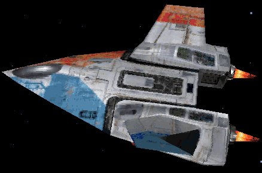

Forums galactiques > Taverne galactique : lieu de discussion informel > On se calme ! (2)
| Anko Réputation à la taverne : 717  18/05 ETU 13:05 | Score : 0 Détails J'ai entendu des potes parler d'adresse Mac ou un truc dans le genre qui serait l'"adresse" du PC... Ce serait pas possible de bannir ça?
C'est pas ultime mais bon... Enfin je dis ça je dis rien vu que je suis nul en info, j'ai deja du mal à gerer un forum alors... | ||
| Daf Réputation à la taverne : 509  18/05 ETU 13:26 | Score : 0 Détails ya des logiciel qui la change...
franchement pour les doubles comptes cest difficille de les detecter...dans une enteprise ou il a une adresse ip il peut y avoir plusieurs joueur... donc impossible de les trouver a moins quil ne se vante sur msn ou par mp... a mon avis...a moins de mettre un cookies special d'authentification...je ne vois pas de soluce... | ||
| Gemnoth-Sinn Réputation à la taverne : 358  18/05 ETU 13:28  | Score : 0 Détails HRP:Il faut vraiement qu'il manque une case aux tricheurs qui cherchent par tout les moyens a dépasser les sécurités et autentifications mises en place.
Le jeu est deja suffisamment prenant sans qu'on aitpour autant besoin de chercher a tricher!/HRP | ||
| Ariel Golleport Réputation à la taverne : 959  18/05 ETU 13:28 | Score : 0 Détails Bon, pour revenir au sujet principal (moi), Wolvie, pourquoi ?
J'explique ce qui s'est passé. Il y a quelque jours, après une discussion interessante et drôles par Mp, nous en sommes venus tout naturellement a dévoiler qui se tenait derrière le PC, chose HRP s'il en est. Il a dit qui il était dans les autres galaxie, et, sous ses demandes, j'ai de même dévoilé mon identité, même si je savais qu'il avait été plusieurs fois été contre lui (et plus que violemment) dans les autres G. Je ne pensais pas que ça allait changer des choses, et pourtant... Depuis, il n'arrete pas de me moinser, me provoque tout le temps, m'insulte (plus que d'habitude s'entend), ne répond pas a mes MP et pose des messages a doubles sens sur l'assemblée... Ce qui m'embéte, parce que du coup j'ai perdue un amis. Wolvie, incapable de la distinction RP/HRP ? | ||
| Ciran Réputation à la taverne : 213  18/05 ETU 13:32 | Score : 0 Détails [ hrp ]
Et encore, le cookie d'identification tombe à l'eau dés que le joueur formate ou si il empèche les cookies d'être enregistrés sur l'ordi (cf.mozilla ou autres). De plus, cela nécessiterai que le joueur soit absolument connecté depuis la même machine... Et tous le monde n'a pas un portable... Bon, autrement, on vas tous de même pas se laisser abattre pas des Zouaves non ? [ /hrp ] | ||
| Gemnoth-Sinn Réputation à la taverne : 358 18/05 ETU 13:34 | Score : 0 Détails HRP: Là Ariel (et sans aucune trace de sarcasme!) vous avez gagné une place dans mon coeur.
C'est vrai que c'est dommage de gâcher une relation d'amitié pour un jeu. Mème Anko, ma pire énnemie R.P. ne m'est en rien hostile en dehors du jeu./HRP | ||
| Anko Réputation à la taverne : 717 18/05 ETU 14:00 | Score : 0 Détails HRP/ toi, attends que je remette les pieds a la fac....
Mais pas avant septembre, t'as vu je suis sympa ^^' Blague à part, meme si on aime pas le perso, respecter les joueurs est un impératif! | ||
| Alkadrim Réputation à la taverne : 461  18/05 ETU 14:23 | Score : 0 Détails Tu vas voir ta gueule à la récré ^^
| ||
| Trichelieu Réputation à la taverne : 28  18/05 ETU 14:25 | Score : 0 Détails Le multi c'est mal... Idem pour le votageation à la tete de l'individu...
Réagissez comme des adultes.... Par pitié! | ||
| Wolverine Réputation à la taverne : 2271  18/05 ETU 15:43 | Score : 0 Détails Désolé, ça n'a rien à voir avec les autres identités des autres galaxies et des autres temps (cause de reboot).
Ariel (le personnage) dit des choses à l'Assemblée que le joueur doit assumer. Et je note en fonction de ce qui est dit dans les messages. Quand c'est bon, je mets des "+". Quand c'est nul, je mets des "-". Maintenant, pour être clair et compréhensible, je considère que le RP ne se fait pas tout seul dans son coin comme celui d'Ariel. Un bon Rp, c'est d'abord offrir une perche aux autres joueurs pour continuer à jouer. Quand Ariel (le personnage) poste TOUS les matins des MP où la LGX passe pour des salauds, ça me gonfle. Il n'y a aucun progrès dans le RP d'Ariel et je n'ai aucun moyen de "rentrer dans le jeu" pour le faire évoluer. Donc, je mets des moins parce que le RP n'évolue pas. Question respectueuse à Dieu : nouveau critère de notation envisageable ? Désolé mais je pratique le RP depuis, hem, 23 ans maintenant et il serait intéressant de faire évoluer celui qui est en cours ou arrêter le jeu stérile qui me brise les c*****. (Vous êtes priés d'oublier vite le chiffre donné sinon je vais passer pour un vieux con ! Quoi ? J'en suis un ? OK, j'enlève le masque : Tin ! Tin ! Je suis vieux !) J'ai pas envie de retomber dans la G0 (souviens-toi, ô joueur d'Ariel à quel niveau c'était tombé, à cause surtout d'Imothep !) avec des boucles argumentaires infinies (ça = cauchemard dans mon boulot). Ou dans la fin de la G1 où le respect a disparu entre ennemis alors que Thâois, Kev et Aeschma ont toujours fait des efforts de RP. Maintenant, Joueur d'Ariel, de Pigeon et autres que je moinse souvent : "qui aime bien châtie bien" ! MAIS, par pitié, n'oubliez pas de concevoir que le RP, c'est d'abord une coopération entre joueurs. PS : perdre un ami chez moi, c'est plus grave que s'affronter sur un jeu. Tu n'as rien perdu du tout, je suis juste TRES exigeant ... | ||
| Gemnoth-Sinn Réputation à la taverne : 358 18/05 ETU 16:00 | Score : 0 Détails Comparer "Ariel" a "pigeon et autres" est déplacé!! elle a eu une brève chûte de R.P. quand elle a négligée son orthographe, mais c'est du passé!
D'autre part (et je ne suis pas le seul) je trouve que le R.P. dévalorisant la L.G.X est aussi crédible que moi me présentant diplomate: Toute la galaxie connait la LGX, toute la galaxie connait Ariel! Si vous lui reprochez des insultes proférés, mème si ceraines furent hors limites, dans la majorité des cas je me suis bien amusé (je rappèle que je ne parle ici que d'ariel). Se vexer pour ça au point d'en oublier qu'il s'agit au fond que d'un jeu, c'est disproportionné! | ||
| Daf Réputation à la taverne : 509 18/05 ETU 16:07 | Score : 0 Détails Mais la disproportion ne caracterise pas le joueur IRL...c'est juste du RP...
Enfin c'est ce que je pensais... | ||
| Wolverine Réputation à la taverne : 2271 18/05 ETU 16:21 | Score : 0 Détails Je ne moinse pas le RP, je "moinse" la répétititon excessive ...
J'ai déjà abandonné un personnage dans la G0 à cause d'une ambiance déléthère et des arguments répétitifs qui empêchaient toute progression du RP. Je n'ai pas envie de revoir ça ici. | ||
| Sullïwan Réputation à la taverne : 1097  18/05 ETU 18:04 | Score : 0 Détails Je garde toujours du plaisir à lire les messages d'Ariel, ses talents de propagande sont prodigieux, je n'ai jamais l'impression qu'elle se répète, elle trouve toujours des nouveaux moyens (originaux) pour critiquer la LGX. Son orthographe ne m’a jamais gêné, peut-être parce que je fais les mêmes fautes^^. Son RP a encore de l’avenir, tant qu’elle aura de l’inspiration ;).
Tes critiques, Wolvie, empêcherait la vraie propagande, qui se répète toujours, mais avec d’autres mots, pour convaincre par la technique de la répétition. D’accord, on pourrait trouver cela ennuyant après un moment, mais ce n’est pas encore le cas pour moi. | ||
| talrash Réputation à la taverne : 0  18/05 ETU 18:08 | Score : 0 Détails Pour le cas de pigeon et de yuan , un message est fais dans le forum externe pour expliquer se malhentendus .
http://matthieu.robin.free.fr/phpBB2/posting.php Merci a tous | ||
| Wolverine Réputation à la taverne : 2271 18/05 ETU 18:17 | Score : 0 Détails adresse complète c'est possible ? Yuan, c'est encore la petite soeur de 6 ans qui apprend à jouer ?
| ||
| télémaque Réputation à la taverne : -13  18/05 ETU 18:38 | Score : 0 Détails yuan est un joueur comme les autres et ont peut le voir par des adresse ip differente et que tout le monde le connais , 5 joueurs le connaisse irl et une dizaine le connaisse par msn .
Il avait juste preter le conte a pigeon en attendant qu'il trouve un pc ou un autre commandant pour lui donner . | ||
| daetha Réputation à la taverne : 526  18/05 ETU 18:45 | Score : 0 Détails Bon, ici le jopueur, je pousse ma gueulante juste une fois.
Pigeon pour ne pas le dénoncer attaque Daetha, jusque là tout va bien. Mais quand ce ***************************************************** me reprends une planète et se met en vacance pour ne pas la perdre je dis NON ! Le mode vacance n'est pas une fonction de stratégie ! C'est quant on part vraiment, physiquement ! Voilà, désolé PS: Merci joueur(se) d'Ariel, je vais l'encadré au dessus de ma cheminée, quant j'en aurai une^^ | ||
| Ariel Golleport Réputation à la taverne : 959 18/05 ETU 18:45 | Score : 0 Détails "MAIS, par pitié, n'oubliez pas de concevoir que le RP, c'est d'abord une coopération entre joueurs."
Ne vous tend-je pas des perches tout le temps ? Dans mes messages, dans mes demandes de guerre ou de paix. Certe, je l'admet, il y a eu une petite bis répétita, principalement a cause de la LGX qui n'a cessé de déclamer la même chose sur Ariel alors qu'elle souhaitait vraiment changer un peu. Regarde ou ton obstination t'a mené... En guerre. Mais, ne serait-ce qu'avec "l'avis au nouveau commandants", le RP s'en trouve largement amélioré. Vieux, va. EDIT : et ne t'inquiète pas, j'ai décidé de faire un truc puissant bientôt. | ||
| Wolverine Réputation à la taverne : 2271 18/05 ETU 18:54 | Score : 0 Détails argh ! Je le savais : elle m'a traité de vieux ! argh ! Vite une intervention divine ! Un cataclysme dans son salon, dans sa baignoire !
Quant à mon obstination, tu parles de quoi ? |
Forums galactiques > Taverne galactique : lieu de discussion informel > On se calme ! (2)